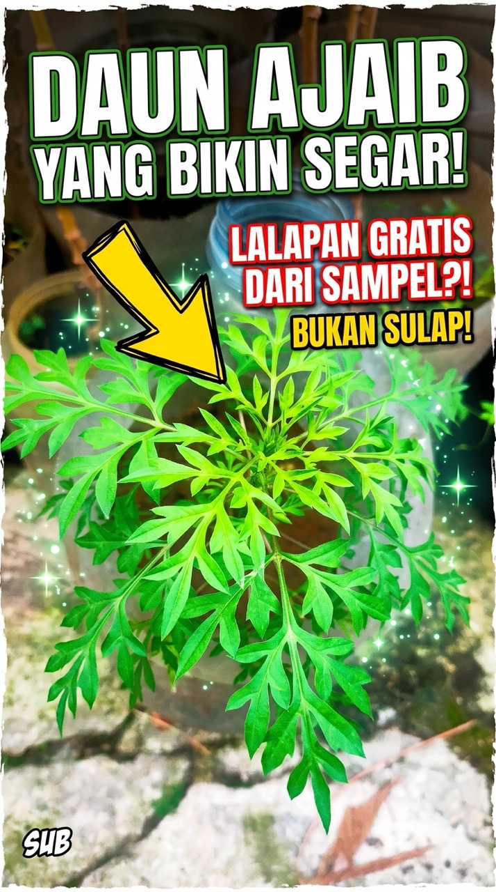

Pernah merasa bosan dengan menu lalapan yang itu-itu saja? Atau mungkin ingin menanam sesuatu yang tidak cuma cantik di mata, tapi juga bermanfaat di meja makan? Kenikir (Cosmos caudatus) adalah jawabannya. Tanaman yang sering dianggap "gulma" atau tanaman liar ini sebenarnya adalah harta karun tersembunyi di pekarangan rumah.

Mengapa Harus Menanam Kenikir?
Kenikir memiliki aroma khas yang segar dan rasa yang sedikit getir namun bikin nagih. Selain rasanya yang unik, kenikir dikenal memiliki banyak manfaat kesehatan, seperti sebagai antioksidan alami dan membantu melancarkan pencernaan. Menanamnya sendiri di rumah menjamin lalapan yang kita konsumsi 100% organik, tanpa pestisida kimia.

"Tanaman 'gulma' ternyata lalapan sultan — siapa sangka, bray!"
Tips Menanam Kenikir di Lahan Sempit
Kabar baiknya, kenikir sangat mudah tumbuh, bahkan di dalam botol plastik bekas sekalipun. Berikut adalah langkah praktisnya:
- Pemilihan Media Tanam: Gunakan campuran tanah subur dan kompos dengan perbandingan 2:1 agar nutrisi tercukupi.
- Wadah: Botol bekas berukuran 1,5 liter sudah sangat cukup. Pastikan memberi lubang di bagian bawah untuk sirkulasi air (drainase).
- Penyinaran: Kenikir menyukai cahaya matahari penuh. Pastikan menaruhnya di area yang terkena sinar matahari agar daunnya tumbuh rimbun.
- Penyiraman: Cukup siram sekali sehari, terutama saat cuaca terik seperti di Jakarta belakangan ini.
Cara Mengolah Kenikir
Kenikir paling nikmat disantap sebagai lalapan mentah. Cukup petik pucuk daunnya yang muda, cuci bersih di air mengalir, dan siap dicocol dengan sambal terasi atau sambal dadak favorit Om Opan. Aroma khasnya benar-benar bisa menambah nafsu makan!

"Cocol sambal dadak, kelar satu piring tanpa sadar."

Kesimpulan
Memanfaatkan pekarangan sempit dengan menanam tanaman konsumsi seperti kenikir adalah langkah awal kemandirian pangan skala rumah tangga. Selain hemat, kita jadi tahu persis apa yang kita makan.
Jadi, tunggu apa lagi? Ayo mulai menanam kenikir di botol bekasmu hari ini!
Tetap autodidak, tetap berkah! 🏴Punya tanaman 'gulma sultan' lain di pekarangan lo? Cerita di komentar bawah, atau tanya Om Opan langsung lewat chatbot di pojok kiri bawah.